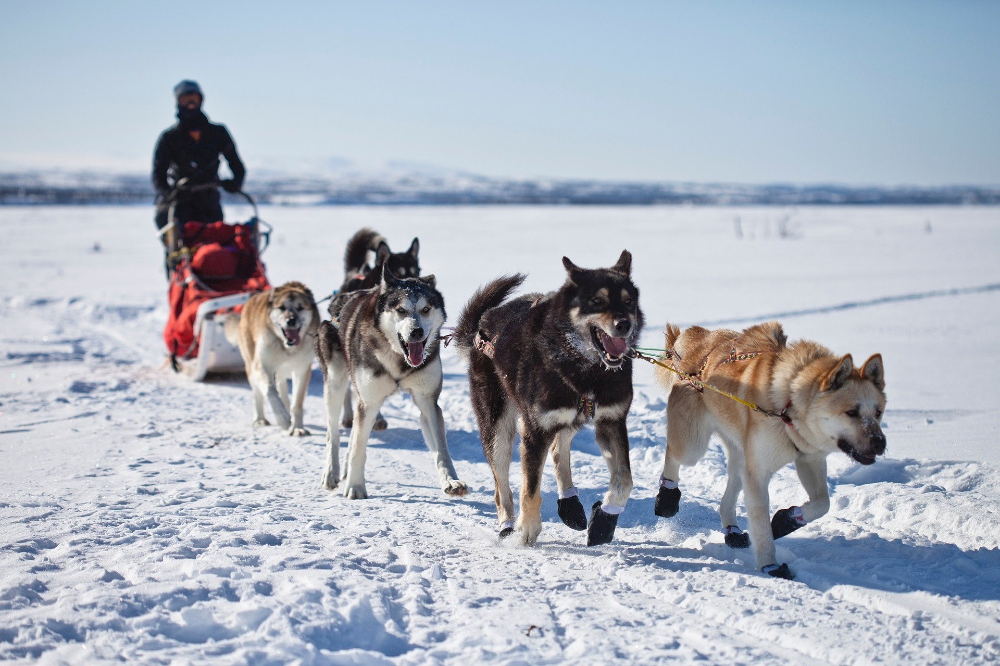

Facts About Alaskan Dogs
The Alaskan Dog Breeds are grouped together as Spitz Dogs or Northern Breeds. Spitz dogs are often classified as the Northern breeds because they are well suited to living in harsh cold climates. Spitz-type breeds have a lot in common making them easy to identify by their looks. They have an insulating undercoat that is very dense and a top coat that is thick, weather-resistant and meant to trap in the warmth of the body. 
Alaskan Huskies are a group of dogs bred for their working ability and not necessarily for looks to conform to a particular breed standard. They are known to be highly athletic, strong with an exceptional ability to run long distances. They are generally not as large as Siberian Huskies or Malamutes but very muscular. Despite the name, American Eskimo Dogs are not an Alaskan dog as many people think. They were bred in Germany and were once called the White German Spitz. But due to anti-German biases during World War One, they were renamed, “American Eskimo Dog.”